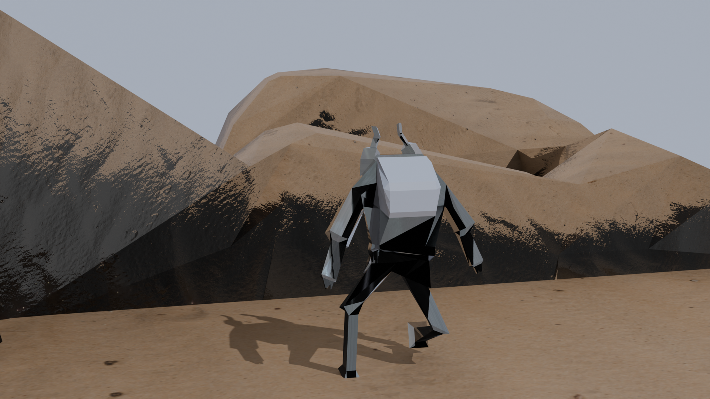
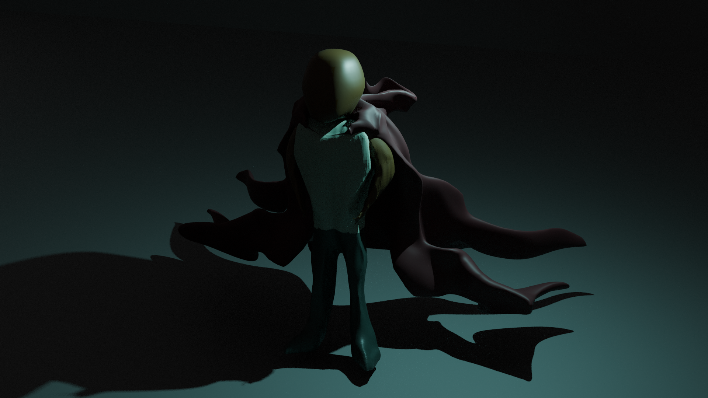

Piano Music
"Brushstrokes on the Mural"
Digital Music
"Don the Mask"
"Dance of the Fireflies"
"Promises by the Door"
3D Renders

Desert Mech: Exploration
The Hero Emerges From Dust, To Dust
From Dust, To Dust

Musician and 3D Artist based in Ann Arbor, MI.
Musical experience across variety of genres with piano performance, composition, and audio engineering. Artistic experience in 3D modeling, sculpting, animation, and rendering.


Desert Mech: Exploration
The Hero Emerges
From Dust, To Dust